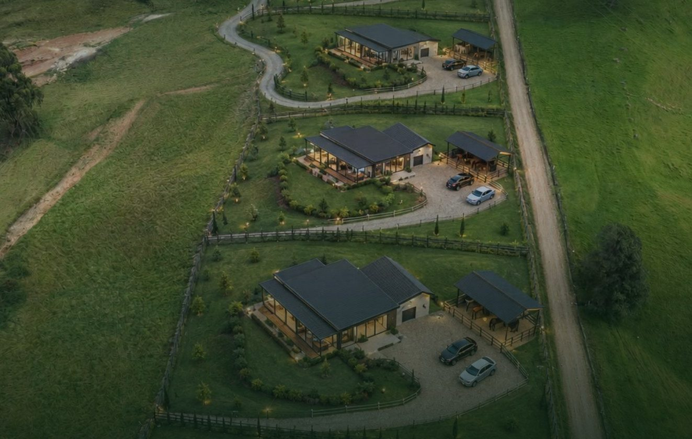

Antioquia

Imagen de referencia del proyecto terminado
Disponible Vendido Reservado Próximas etapas
El mismo equipo hace obra pública de acueducto, alcantarillado y vías, edificios y el loteo San Julián.